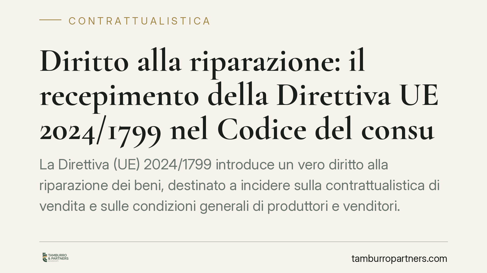

Diritto alla riparazione: il recepimento della Direttiva UE 2024/1799 nel Codice del consumo
La Direttiva (UE) 2024/1799 introduce un vero "diritto alla riparazione" dei beni, destinato a incidere sulla contrattualistica di vendita e sulle condizioni generali di produttori e venditori. Il recepimento italiano modifica il Codice del consumo e il regime della garanzia legale. Vediamo cosa cambia, quali obblighi nascono e dove si annidano le prime criticità applicative.

Quadro normativo: una gerarchia da leggere con precisione
La fonte sovranazionale è la Direttiva (UE) 2024/1799, che non opera in modo isolato: essa modifica la Direttiva (UE) 2019/771 sulla vendita dei beni, già recepita in Italia agli artt. 128 ss. del Codice del consumo (D.lgs. 206/2005). In altri termini, il "diritto alla riparazione" si innesta sull'impianto esistente della garanzia legale di conformità (durata ordinaria biennale), estendendone la logica.
Un'avvertenza doverosa. Gli estremi del decreto di recepimento che circolano come "D.lgs. 25 settembre 2026, n. 176" vanno verificati direttamente sulla Gazzetta Ufficiale: il termine di recepimento della direttiva è fissato al 31 luglio 2026, per cui un decreto autunnale è plausibile ma, allo stato, non va dato per confermato. Fino alla pubblicazione definitiva e alla lettura del testo nazionale, i riferimenti puntuali di numerazione e articoli interni restano da verificare.
Cosa cambia: due binari distinti
La direttiva ragiona su due piani che non vanno confusi.
Primo piano, dentro la garanzia legale. Quando il bene è non conforme, la riparazione resta un rimedio a carico del venditore senza spese per il consumatore. La novità rilevante è la tendenziale preferenza per la riparazione rispetto alla sostituzione in alcune ipotesi, e la previsione di una proroga della garanzia a seguito della riparazione (la direttiva indica una proroga di dodici mesi). Questo profilo, però, va letto nel testo di recepimento: durata, decorrenza e condizioni della proroga sono rimessi alla norma nazionale e vanno confermati.
Secondo piano, fuori dalla garanzia legale. Qui nasce l'obbligo nuovo: per i prodotti soggetti a requisiti di riparabilità stabiliti dal diritto UE, il produttore è tenuto a riparare anche dopo la scadenza della garanzia, su richiesta del consumatore e dietro un prezzo ragionevole. Attenzione: non si tratta di riparazione "gratuita". La gratuità appartiene al regime della garanzia legale per i difetti di conformità; l'obbligo del produttore opera, di norma, a titolo oneroso entro l'ambito dei prodotti individuati dalla normativa europea, salve eccezioni.
Il nodo interpretativo: "prezzo ragionevole" e doppio obbligato
Due questioni meritano attenzione fin da ora.
La prima è la nozione di "prezzo ragionevole". Il concetto è volutamente elastico e andrà riempito di contenuto: il rischio è un contenzioso sulla congruità del corrispettivo richiesto per la riparazione fuori garanzia. Chi produce dovrà poter documentare i criteri di determinazione del prezzo.
La seconda è il coordinamento tra l'obbligo del produttore e la posizione del venditore. Il consumatore si troverà, a seconda dei casi, due interlocutori possibili: il venditore per la non conformità in garanzia, il produttore per la riparazione obbligatoria fuori garanzia. Nei rapporti di filiera questo impone di ripensare le clausole di rivalsa e la ripartizione interna dei costi, oggi spesso tarate solo sulla garanzia legale.
Implicazioni pratiche per il destinatario tipo
Produttori: occorre verificare se i propri beni rientrino tra quelli soggetti a requisiti di riparabilità UE e predisporre canali, tempi e tariffe della riparazione obbligatoria.
Venditori: vanno aggiornate le condizioni generali di vendita e l'informativa precontrattuale, chiarendo al consumatore quale rimedio spetta, da chi e a quali condizioni.
Consumatori: la riparazione diventa un diritto più strutturato, ma con regimi diversi dentro e fuori garanzia; è essenziale distinguere i due casi prima di agire.
Cosa fare in concreto
- Verificate la fonte: controllate la pubblicazione in Gazzetta Ufficiale del decreto di recepimento e i suoi estremi esatti prima di modificare la modulistica.
- Mappate i prodotti: individuate quali beni rientrano nei requisiti di riparabilità UE e, quindi, nell'obbligo di riparazione del produttore.
- Aggiornate le condizioni generali di vendita e le informative, distinguendo garanzia legale e riparazione obbligatoria.
- Rivedete le clausole di rivalsa lungo la filiera, definendo chi sostiene i costi della riparazione e con quali criteri di "prezzo ragionevole".
- Formate la rete commerciale sui nuovi rimedi, per evitare informazioni errate al cliente finale.
---
*Contributo informativo a cura di Tamburro & Partners - Avv. Giuseppe Tamburro. Non costituisce parere legale.*
Ogni contratto ha il suo equilibrio.
Se vuoi una revisione delle clausole o una redazione su misura, scrivi allo studio. Ti rispondiamo entro un giorno lavorativo.